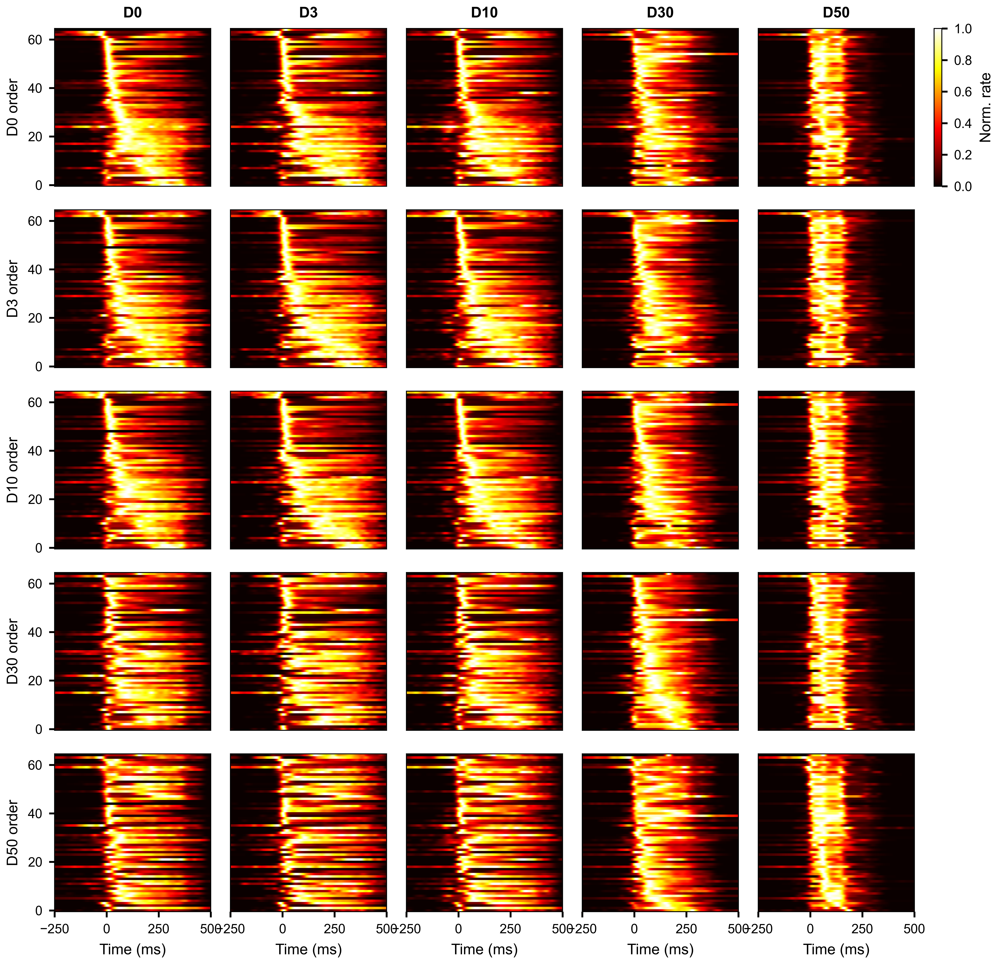
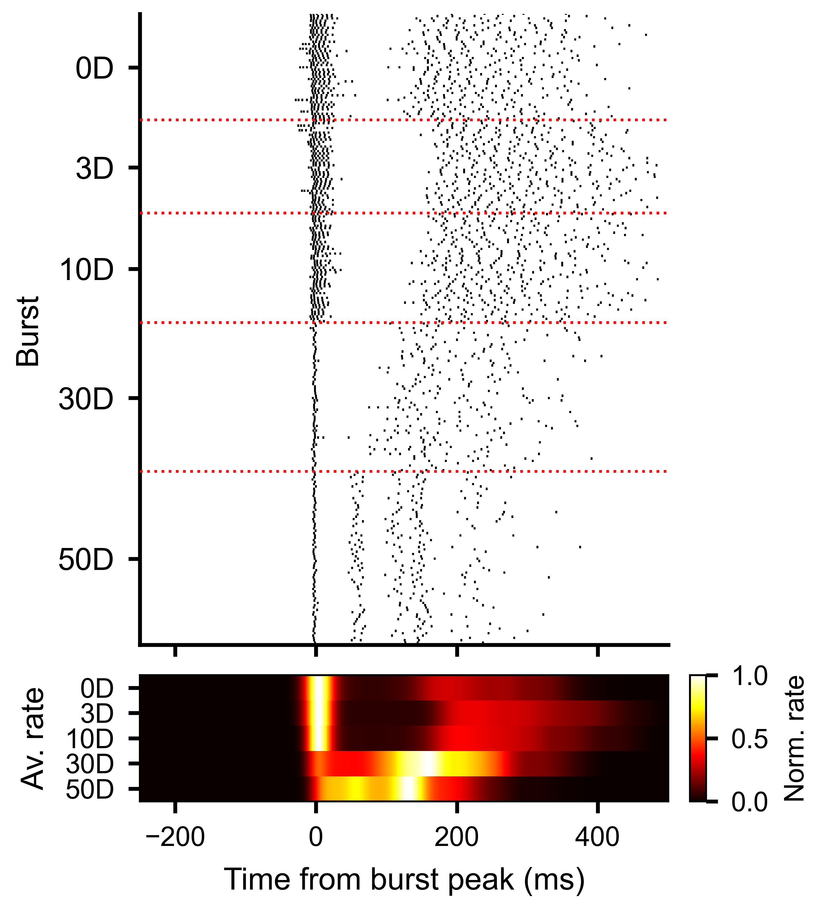
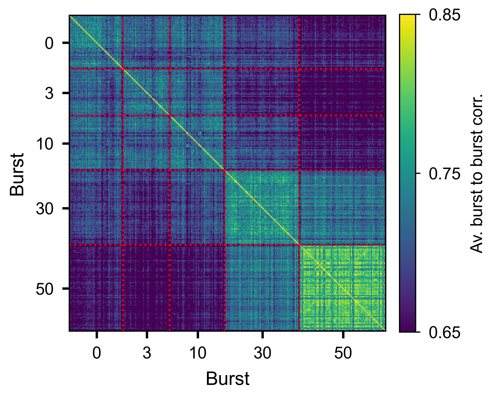
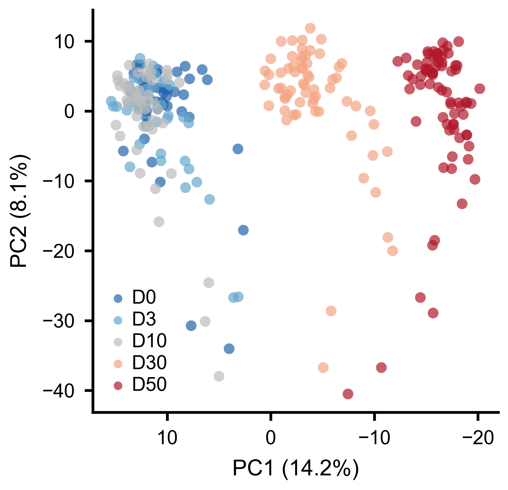

Event-Aligned Analysis
This guide covers extracting windows of neural activity aligned to experimental events (such as network bursts or stimulus onsets), and running analyses on the resulting stacks of trials.
After working through this guide you will know how to:
Align spike or rate data to event times with
align_to_events().Work with
RateSliceStack(3-D firing rate tensor) andSpikeSliceStack(list of per-trial spike data).Plot single-unit burst-aligned rasters.
Compute burst-to-burst correlations per unit.
Run PCA on unit-to-unit correlation structures across trials.
Measure rank-order consistency of activation sequences.
Aligning to Events
The align_to_events() method cuts windows around a
list of event times and returns either a rate-based or spike-based stack.
Each window spans from pre_ms before the event to post_ms after it,
so that time zero corresponds to the event.
from spikelab import SpikeData
# sd is a SpikeData object; tburst is an array of burst peak times (ms)
# kind="rate" returns a RateSliceStack
rss = sd.align_to_events(
tburst, # event times in ms
pre_ms=250, # window before each event
post_ms=500, # window after each event
kind="rate", # "rate" for RateSliceStack, "spike" for SpikeSliceStack
bin_size_ms=1.0, # time bin width (only used for kind="rate")
sigma_ms=10, # Gaussian smoothing sigma (only used for kind="rate")
)
# kind="spike" returns a SpikeSliceStack
sss = sd.align_to_events(
tburst,
pre_ms=250,
post_ms=500,
kind="spike",
)
The events argument can be a numeric array of times in milliseconds, or a
string key that refers to a list stored in sd.metadata. Events whose
window extends outside the recording boundaries are dropped automatically
(with a warning).
RateSliceStack
A RateSliceStack stores event-aligned firing rates as a
3-D array with shape (U, T, S):
U – number of units
T – number of time bins in each window (determined by
pre_ms,post_ms, andbin_size_ms)S – number of slices (one per event/trial)
print(rss.event_stack.shape) # (U, T, S)
# Access the time axis metadata
print(rss.step_size) # ms per bin (default 1.0)
print(len(rss.times)) # S — list of (start, end) tuples per slice
To compute the trial-average firing rate for a single unit:
import numpy as np
unit_idx = 5
unit_avg = np.nanmean(rss.event_stack[unit_idx, :, :], axis=1) # (T,)
To compute the population-average heatmap across all trials:
from spikelab.spikedata.plot_utils import plot_heatmap
# Average across slices, then plot units x time
avg_rate = np.nanmean(rss.event_stack, axis=2) # (U, T)
plot_heatmap(
avg_rate,
cmap="hot",
extent=[-250, 500, 0, avg_rate.shape[0]],
xlabel="Time from event (ms)",
ylabel="Unit",
colorbar_label="Rate (kHz)",
)
{kind=link}

Average burst-aligned firing rate per unit, with units ordered by median peak time. Each column shows a different condition.
SpikeSliceStack
A SpikeSliceStack stores the raw spike times for each
trial as a list of SpikeData objects. This preserves
the full temporal resolution of the data and is useful for analyses that
operate directly on spike times (STTC per trial, waveform extraction, etc.).
print(len(sss.spike_stack)) # S — one SpikeData per trial
print(sss.N) # number of units (same across all slices)
# Access the SpikeData for the third trial
trial_sd = sss.spike_stack[2]
print(trial_sd.N, trial_sd.length)
To convert the spike stack to a 3-D raster array with the same (U, T, S)
shape as a RateSliceStack:
raster_3d = sss.to_raster_array(bin_size=1.0) # (U, T, S)
Use plot_aligned_slice_single_unit() to
visualize one unit’s spike times across all trials as a raster plot:
import matplotlib.pyplot as plt
fig, ax = plt.subplots(figsize=(6, 4))
sss.plot_aligned_slice_single_unit(
unit_idx=5,
ax=ax,
x_range=(-250, 500), # time axis limits in ms
style="eventplot", # "scatter" for dots, "eventplot" for line markers
invert_y=True, # first trial at the top
linewidths=0.5,
xlabel="Time from burst peak (ms)",
ylabel="Burst",
)
{kind=link}

Each row is one burst. Vertical line markers show individual spike times for one unit, aligned to the burst peak at time zero.
Burst-to-Burst Correlations
To measure how consistent each unit’s activity pattern is across trials,
use get_slice_to_slice_unit_corr_from_stack().
This computes pairwise correlations between every pair of slices, separately
for each unit, producing a PairwiseCompMatrixStack of
shape (S, S, U).
corr_stack, av_corr_per_unit = rss.get_slice_to_slice_unit_corr_from_stack(
MIN_RATE_THRESHOLD=0.1, # ignore units with max rate below this
MIN_FRAC=0.3, # unit must be active in >= 30% of slices
max_lag=10, # max lag in bins for cross-correlation
)
# corr_stack: PairwiseCompMatrixStack with shape (S, S, U)
# av_corr_per_unit: ndarray (U,) — average slice-to-slice correlation per unit
print(corr_stack.stack.shape) # (S, S, U)
print(av_corr_per_unit.shape) # (U,)
Higher values of av_corr_per_unit indicate units whose burst-aligned
activity pattern is more stereotyped across trials.
{kind=link}

Slice-by-slice correlation matrix for a single unit, showing trial-to-trial consistency of the burst response.
Unit-to-Unit PCA
To ask whether the overall pattern of pairwise interactions changes across conditions, compute unit-to-unit correlations per slice and then apply PCA to the resulting feature vectors.
Step 1 – compute unit-to-unit correlations per slice:
u2u_stack, u2u_lag_stack, av_corr, av_lag = rss.unit_to_unit_correlation(
max_lag=10, # max lag in bins for cross-correlation
)
# u2u_stack: PairwiseCompMatrixStack with shape (U, U, S)
# Each slice contains the U x U correlation matrix for that trial
Step 2 – extract the lower triangle of each slice as a feature vector:
features = u2u_stack.extract_lower_triangle_features()
# features: ndarray (S, F) where F = U*(U-1)/2
Step 3 – apply PCA:
from spikelab.spikedata.utils import PCA_reduction
pca_coords, var_explained, components = PCA_reduction(features, n_components=3)
# pca_coords: ndarray (S, 3) — one point per trial
# var_explained: ndarray (3,) — fraction of variance per component
Step 4 – plot the PCA embedding, coloring each point by its condition:
import numpy as np
from spikelab.spikedata.plot_utils import plot_scatter
fig, ax = plt.subplots(figsize=(5, 5))
plot_scatter(
ax,
pca_coords[:, 0],
pca_coords[:, 1],
xlabel=f"PC1 ({var_explained[0]*100:.1f}%)",
ylabel=f"PC2 ({var_explained[1]*100:.1f}%)",
groups=condition_index, # integer array (S,) — condition per trial
group_labels=["D0", "D3", "D10", "D30", "D50"],
marker_size=15,
alpha=0.7,
)
If conditions cluster separately in the PCA space, it means the pairwise interaction structure of the network changes between conditions.
{kind=link}

Each point is one burst. Colors indicate experimental conditions. Separation along PC1 reflects systematic changes in pairwise interactions.
Rank-Order Analysis
Rank-order analysis tests whether units activate in a consistent sequence across trials. For each trial, units are ranked by their peak firing time. Pairwise Spearman correlations between rank vectors quantify the reproducibility of the activation order.
Using RateSliceStack:
# Step 1: get peak timing per unit per slice
timing_matrix = rss.get_unit_timing_per_slice(
MIN_RATE_THRESHOLD=0.1, # units below threshold get NaN
)
# timing_matrix: ndarray (U, S) — peak time bin index per unit per slice
# Step 2: compute pairwise rank-order correlations
corr_matrix, av_corr, overlap_fracs = rss.rank_order_correlation(
timing_matrix=timing_matrix, # optional: pass precomputed timing
min_overlap=3, # minimum shared active units for a valid pair
n_shuffles=100, # shuffle iterations for significance testing
seed=1,
)
# corr_matrix: PairwiseCompMatrix (S, S) — rank correlation per trial pair
# av_corr: float — mean rank-order correlation across all pairs
# overlap_fracs: PairwiseCompMatrix (S, S) — fraction of shared active units
Using SpikeSliceStack (works on raw spike times):
timing_matrix = sss.get_unit_timing_per_slice(
timing="median", # median spike time per unit per slice
min_spikes=2, # minimum spikes for a valid timing value
)
corr_matrix, av_corr, overlap_fracs = sss.rank_order_correlation(
timing_matrix=timing_matrix,
min_overlap=3,
n_shuffles=100,
seed=1,
)
print(f"Average rank-order correlation: {av_corr:.3f}")
A high average correlation indicates that neurons tend to fire in the same relative order from burst to burst, suggesting a stereotyped activation sequence. The shuffle-based significance test compares the observed correlations to a null distribution obtained by randomly permuting unit labels within each trial.